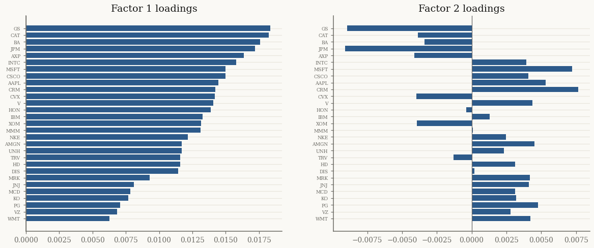

Factor mixtures for a Dow Jones 30 portfolio#
At portfolio scale — dozens of assets — a full covariance matrix has too many
parameters to estimate reliably. The factor mixtures replace \(\Sigma\) with
\(F F^\top + \operatorname{diag}(D)\), capturing the dominant co-movement with a
handful of latent factors while keeping the heavy-tailed GH structure. This
tutorial fits a FactorGeneralizedHyperbolic to the Dow Jones Industrial
Average constituents and inspects the factors it discovers.
import jax
jax.config.update("jax_enable_x64", True)
import jax.numpy as jnp
import numpy as np
import pandas as pd
from pathlib import Path
from normix import FactorGeneralizedHyperbolic, NormalInverseGaussian
from normix.utils.plotting import set_theme
set_theme()
np.set_printoptions(precision=4, suppress=True)
Data: the Dow Jones 30#
We select the Dow Jones Industrial Average constituents from the S&P 500 return panel shipped with the repository. One ticker (WBA, removed from the index in 2024) is absent from the panel, leaving 29 names:
DJ30 = [
"AAPL", "AMGN", "AXP", "BA", "CAT", "CRM", "CSCO", "CVX", "DIS", "GS",
"HD", "HON", "IBM", "INTC", "JNJ", "JPM", "KO", "MCD", "MMM", "MRK",
"MSFT", "NKE", "PG", "TRV", "UNH", "V", "VZ", "WBA", "WMT", "XOM",
]
data_path = Path("../../../data/sp500_returns.csv").resolve()
panel = pd.read_csv(data_path, index_col="Date", parse_dates=True)
tickers = [t for t in DJ30 if t in panel.columns]
R = panel[tickers].dropna(axis=0, how="any").values.astype(np.float64)
n_train = len(R) // 2
X_train, X_test = jnp.asarray(R[:n_train]), jnp.asarray(R[n_train:])
d = len(tickers)
print(f"d = {d} DJ30 stocks ({len(DJ30) - d} missing), "
f"train {n_train}, test {R.shape[0] - n_train}")
d = 29 DJ30 stocks (1 missing), train 1276, test 1276
The parameter budget#
full_cov = d * (d + 1) // 2
for r in (1, 2, 3):
print(f"factor r={r}: {d * r + d:4d} covariance params "
f"(full Σ: {full_cov})")
factor r=1: 58 covariance params (full Σ: 435)
factor r=2: 87 covariance params (full Σ: 435)
factor r=3: 116 covariance params (full Σ: 435)
A two-factor model describes the \(30 \times 30\) covariance with 90 numbers instead of 465.
Fitting factor GH at several ranks#
import time
results = {}
for r in (1, 2, 3):
t0 = time.perf_counter()
init = FactorGeneralizedHyperbolic.default_init(X_train, r=r)
res = init.fit(X_train, max_iter=60, tol=1e-3,
e_step_backend="cpu", m_step_backend="cpu")
results[r] = res.model
print(f"r={r}: {res.n_iter:3d} iters, {time.perf_counter() - t0:5.1f}s, "
f"test LL = {float(res.model.marginal_log_likelihood(X_test)):.4f}")
r=1: 60 iters, 15.6s, test LL = 84.4696
r=2: 60 iters, 10.0s, test LL = 84.9422
r=3: 60 iters, 9.9s, test LL = 85.4393
Adding factors raises the held-out likelihood with sharply diminishing returns — the first factor (a market factor) does most of the work.
Inspecting the latent factors#
The columns of \(F\) are the factor loadings: how strongly each stock responds to each latent factor. The first factor typically loads positively on every stock — it is the market:
import matplotlib.pyplot as plt
model = results[2]
F = np.asarray(model.F)
order = np.argsort(F[:, 0])
fig, axes = plt.subplots(1, 2, figsize=(13, 5))
for k, ax in enumerate(axes):
ax.barh(np.array(tickers)[order], F[order, k], color="#2D5A8A")
ax.set_title(f"Factor {k + 1} loadings")
ax.tick_params(axis="y", labelsize=6)
ax.axvline(0, color="0.4", lw=0.8)
plt.show()
print(f"factor 1 loadings all positive: {bool((F[:, 0] > 0).all() or (F[:, 0] < 0).all())}")

factor 1 loadings all positive: True
Heavy tails survive at scale#
The factor structure regularizes the covariance; the GH subordinator still captures the joint heavy tails. We compare the factor model’s out-of-sample likelihood against a full-\(\Sigma\) NIG fit to the same basket:
full_nig = NormalInverseGaussian.default_init(X_train).fit(
X_train, max_iter=60, tol=1e-3, e_step_backend="cpu").model
print(f"FactorGH (r=2): {model.F.shape[1] * d + d:4d} cov params, "
f"test LL {float(model.marginal_log_likelihood(X_test)):.4f}")
print(f"full-Σ NIG : {full_cov:4d} cov params, "
f"test LL {float(full_nig.marginal_log_likelihood(X_test)):.4f}")
FactorGH (r=2): 87 cov params, test LL 84.9422
full-Σ NIG : 435 cov params, test LL 86.0742
The factor model reaches a comparable out-of-sample likelihood with a fraction of the covariance parameters — and every internal solve goes through the Woodbury identity, so it scales to hundreds of assets without forming a dense \(d \times d\) inverse.
Takeaways#
FactorGeneralizedHyperbolic.default_init(X, r=...)thenfitestimates a low-rank-plus-diagonal covariance with the full GH tail behaviour.The first factor is a market factor (loads on all assets); extra factors add little out-of-sample likelihood here.
Factor mixtures match a full-\(\Sigma\) fit with far fewer parameters and Woodbury-scale linear algebra.
Next: Portfolio CVaR and its derivatives uses a fitted mixture to compute and differentiate portfolio tail risk.